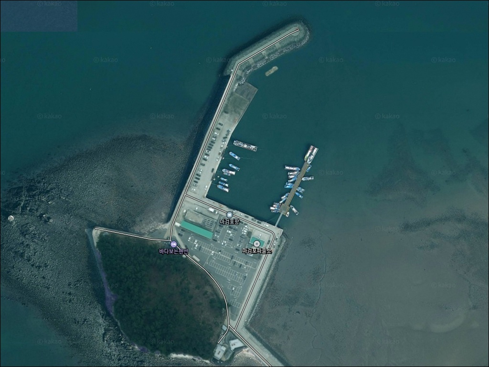
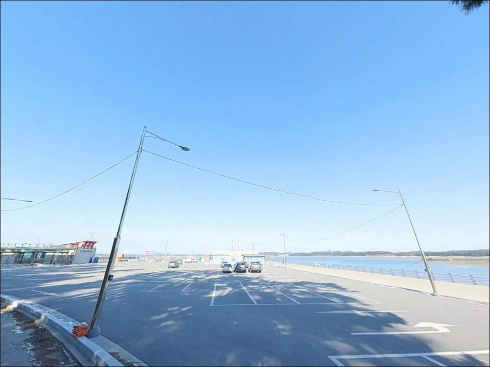
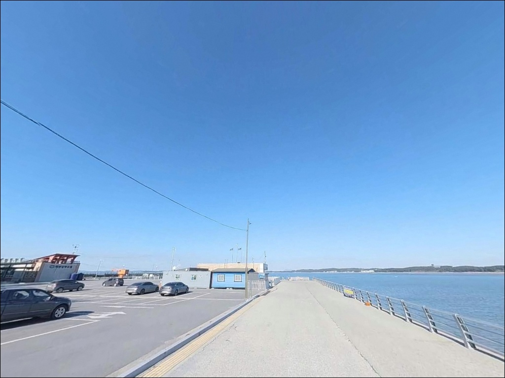
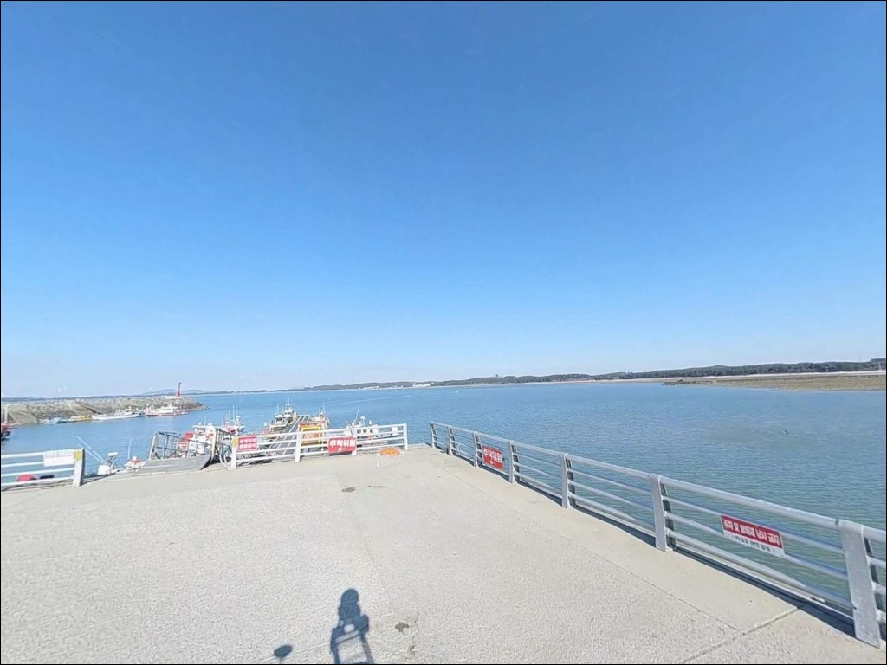
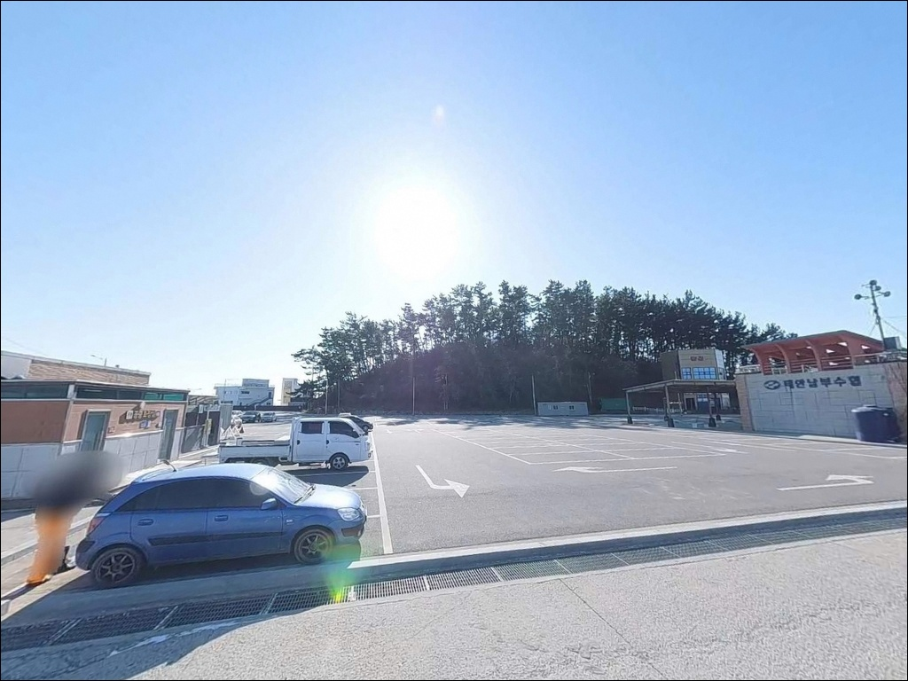
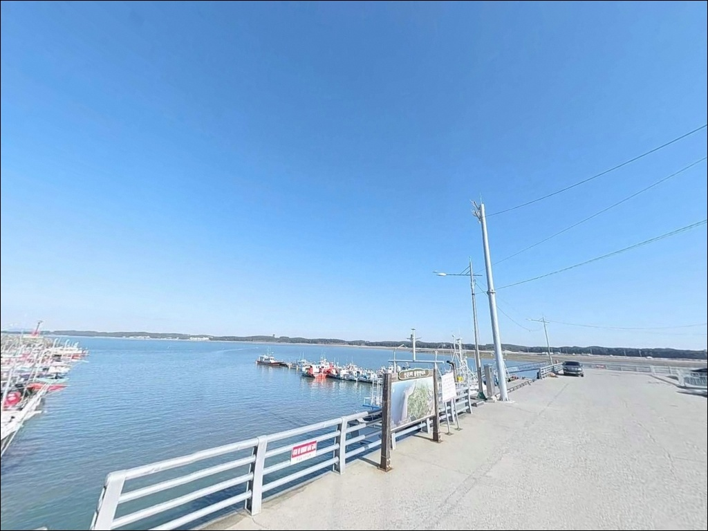
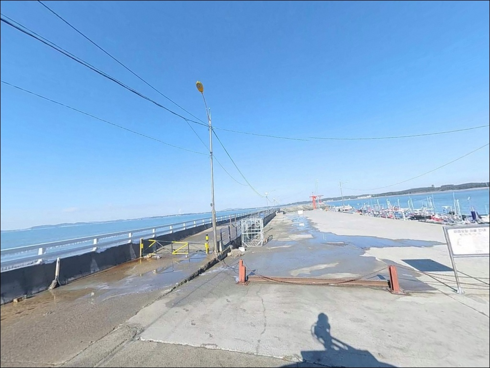
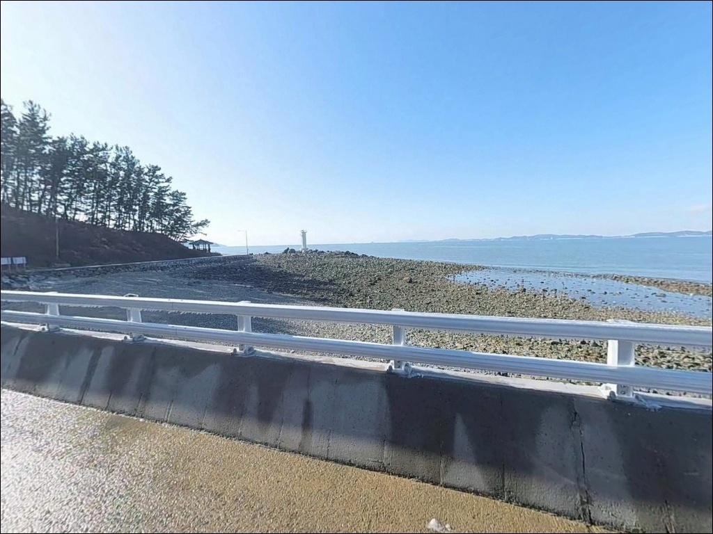
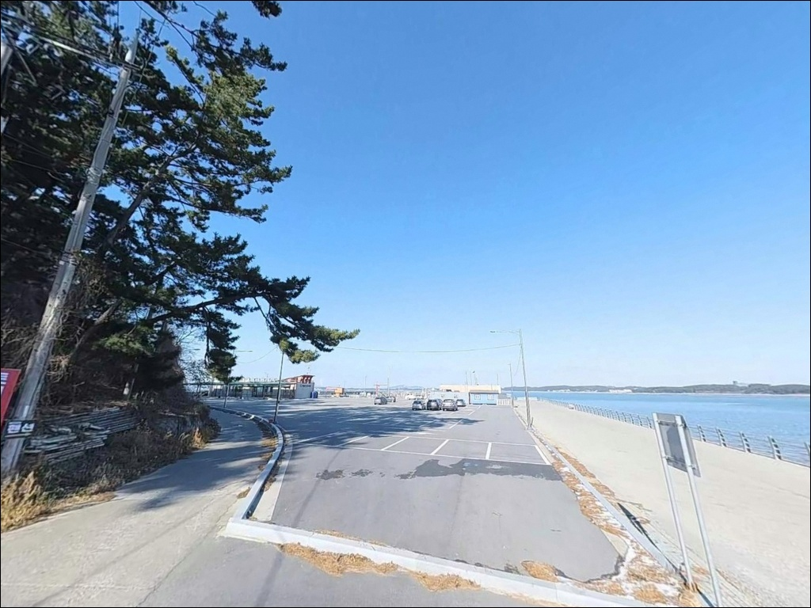

이 페이지에는 광고(제휴 링크 포함)가 있으며, 광고 링크를 통해 구매하면 운영자가 판매 수익 또는 수수료를 받을 수 있습니다. 포인트 사진: 카카오맵 스카이뷰·로드뷰. 이 페이지의 지도·사진 이미지는 카카오맵의 실제 서비스 이미지와 다를 수 있습니다.


마검포항, 충남 태안군 고요한 차박, 낚시 명소
포인트 안내
마검포항
충남 태안군 남면 신온리 1-7
사리 전후 물때에 마검포항 방파제 끝단까지 진입하면
조류가 세져 봉돌이 쓸리고
채비 운용 자체가 불가능해지는 상황을 만날 수 있습니다.
어렵게 이동해 방파제 끝까지 걸어갔는데
자리를 잡지 못하는 경험이
이 포인트에서 반복되는 이유입니다.
마검포항은 충남 태안군 남면 신온리에 자리한
1995년 지방어항으로 지정된 서해 연안 어항입니다.
방파제 501m, 선착장 216.8m 규모로
내항과 외항이 명확히 나뉘는 구조이며,
선상낚시 출조 업체가 다수 집결한
태안 남면 권역의 대표 연안 포인트입니다.
이 글은 마검포항의 방파제 구조와 조류 타이밍 판단,
진입 여건, 차박 환경, 낚시 스타일별 공략 조건에 집중합니다.
조황 단정이나 특정 어종 보장은
이 글의 범위에 포함되지 않습니다.

1. 진입 동선과 주차 여건
마검포항까지 이어지는 도로는
포장 상태가 양호한 편입니다.
마검포해수욕장을 연결하는 관광 접근로 특성상
급경사나 비포장 구간 없이
진입이 수월한 구조이며,
대형 SUV나 캠핑 장비를 적재한 차량도
회차에 큰 어려움이 없는 편입니다.
공식 주차장이 충남 태안군 남면 마검포길 427-22에
확인됩니다.
선상낚시 출조 업체 안내에서 명시적으로 제공되는
주소로, 항구 진입 시 기준점으로 활용하기에 적합합니다.
방파제 초입 주변과 항 내부 물양장 공터도
주차 후보 구간으로 활용되는 편이며,
어선 접안 구역을 막지 않는 자리가 우선입니다.
마검포해수욕장과 힐링캠핑장이 바로 인접한
관광 벨트 구조이므로,
주말과 성수기에는 이른 시간 자리 선점이 필요합니다.
주차 허용 여부는 현장 표지판 기준으로
최종 확인하는 것이 원칙입니다.

2. 차박 환경과 야간 체류 여건
마검포항은 마검포해수욕장, 힐링캠핑장, 리조트가
바로 인접한 구조입니다.
외딴 어촌 포구 분위기보다는
"관광지 옆 항구"에 가까운 환경으로,
완전한 한적함을 기대하기는 어렵습니다.
주말이나 성수기에는 차량 통행과 인적이
비교적 있는 분위기입니다.
비수기 평일에는 차량 통행이 적고
어촌 포구 특유의 조용함이 살아 있는 편입니다.
선상낚시 출조가 이른 새벽에 이뤄지는 포구 특성상
야간에는 인적이 줄어드는 경향이 있어,
차박을 주목적으로 한다면 비수기 평일 방문이 유리합니다.
가로등 시설은 항 내부에 존재하는 편이나
방파제 끝단으로 갈수록 조명이 줄어들 가능성이 있습니다.
야간 낚시나 방파제 이동 시에는
개인 헤드랜턴을 반드시 챙겨야 합니다.


3. 주변 편의시설 및 인프라 현황
CU 태안마검포점이 충남 태안군 남면 마검포길 203에
위치한 것이 확인됩니다.
항구 인근에서 기본 식료품과 음료 보충이 가능한
편의점이 도보권 안에 있는 환경입니다.
채비 소품은 항 주변 선상낚시 출조점에서
일부 보충이 가능한 편입니다.
마검포 힐링캠핑장이 항 인근에서 운영 중입니다.
오토캠핑과 카라반 시설을 갖춘 유료 캠핑장으로,
전기·화장실·샤워 시설은 이 캠핑장을
통해 이용하는 방식입니다.
항구 자체 공용 편의시설 여부는
현장 확인이 우선입니다.
반경 10km권 의료 시설로는
남면보건지소가 남면중앙로에 위치합니다.
응급 상황 대비 위치를 미리 파악해두고,
기본 비상약품은 출발 전에 챙기는 것이 기본입니다.

4. 방문 전 반드시 챙겨야 할 준비사항
마검포항 방문에서 가장 먼저 확인할 것은 물때입니다.
조류가 낙조 때 우세하게 흐르는
서해 안면도 서부 권역 특성상,
사리 전후에는 방파제 끝단 조류가 세져
채비 운용 자체가 어려워집니다.
바다타임에서 마검포항 기준 물때를 확인하고
조금 전후 또는 정조 타이밍을 기준으로
출발 시각을 맞추는 것이 기본 전략입니다.
마검포항 방파제 외항 쪽은 조류 영향을 직접 받아
물때 타이밍이 조과를 결정하는 핵심 변수입니다.
기상청 해상 예보는 당일 아침 다시 확인하는 것이
포인트 낭비를 막는 조건입니다.
갯벌·모래 저질 구조상 밑걸림보다는
조류로 인한 채비 유실이 더 잦을 수 있어,
여분 채비는 넉넉하게 준비하는 편이 좋습니다.
마을 어항이라 어선 조업과 선착장 접안이
이뤄지는 공간입니다.
방파제 접안 구역과 어선 동선을 파악한 뒤
자리를 잡는 것이 기본 매너입니다.
방파제 낚시 시 구명조끼 착용은 필수이며,
사리 전후 강풍 예보가 있다면
방파제 끝단 진입은 재고하는 편이 안전합니다.

5. 사리 전후 방파제 끝단, 조류가 채비를 먼저 데려갑니다
마검포항은 방파제 501m 길이로
서해 지방어항 기준 포인트 선택지 폭이 넓은 편입니다.
방파제 외항 쪽은 테트라포트가 설치되어 있으며
서해 오픈 구조로 조류와 파도 영향을 직접 받습니다.
반면 내항은 잔잔한 수면 조건으로
바닥층 위주 낚시와 찌낚시에 유리한 환경입니다.
방파제 끝단과 항 입구 라인은
이 포인트에서 가장 주목할 만한 구간입니다.
항 입구에 물골이 형성될 가능성이 있어
조류 흐름이 집중되는 구조이며,
조류가 살아 있을 때 루어·에깅 채비가
반응을 보이는 구간입니다.
다만 사리 전후에는 조류가 지나치게 강해져
채비 운용 자체가 어려워지는 역효과가 납니다.
저질은 갯벌과 모래가 혼합된 구조로
밑걸림은 상대적으로 적은 편입니다.
간조 시에는 내항 주변 일부 구간에서
모래 제방이 드러나는 지형 특성이 있어
물때에 따른 수심 변화 폭이 크게 나타날 수 있습니다.
가기 전에 최신 조황은 꼭 검색해 보시기 바랍니다.


6. 포인트에 어울리는 낚시 스타일
이 포인트 지형에서 가장 많이 활용되는 방식은
원투낚시입니다.
방파제 외항 방향으로 채비를 멀리 보내
갯벌·모래 바닥층을 노리는 구조로,
붕장어·백조기·도다리 계열을
기대해 볼 수 있는 방식입니다.
방파제 중단에서 끝단 구간이
원투 자리로 활용하기 적합한 편입니다.
루어낚시는 항 입구와 방파제 외항 경계 구간을
중심으로 운용하기 적합합니다.
이 구간은 조류 변화가 생기는 라인으로
농어·광어 계열이 머무는 조건이 형성될 가능성이 있습니다.
사리 전후 방파제 끝단은 조류가 세져
채비 운용이 어려워지므로,
조금 전후를 기준으로 진입 시각을 맞추는 것이 기본입니다.
가을 시즌에는 에깅과 주꾸미 워킹이
이 권역에서 활발해지는 경향이 있습니다.
갑오징어 선상 출조가 활발한 어항인 만큼
방파제 주변에서도 노려볼 수 있는 구간입니다.
정조 전후 조류가 약해지는 타이밍에 집중하면
채비 컨트롤이 수월해집니다.
찌낚시는 내항 석축 구간에서 운용하기 적합합니다.
잔잔한 수면 조건을 활용해
학꽁치·숭어 등 회유성 어종 시즌에
집중하는 방식이 이 구조와 잘 맞습니다.

7. 대안 포인트와 플랜 B 동선
마검포항 방파제 조류가 여의치 않거나
주차 공간이 포화 상태일 경우,
드르니항이 첫 번째 대안입니다.
동일 태안 남면 권역에 위치하며
비슷한 지형 특성을 공유하는 포인트로,
이동 부담이 적은 권역 내 대안으로 활용하기 좋습니다.
백사장항은 마검포항에서 약 4.9km 거리에 위치합니다.
규모 있는 항구로 방파제 포인트 다양성을
기대할 수 있는 곳이며,
마검포에서 조황이 여의치 않을 때
이동 검토 대상으로 적합합니다.
동일 안면도 서부 권역 패턴을 공유해
이동해도 채비 세팅을 크게 바꿀 필요가 없습니다.
몽산포항이 마검포항 북측 약 5km 지점에 있습니다.
방파제 원투와 루어 방식으로 알려진
남면 권역 인근 대표 어항이며,
마검포항을 처음 찾는다면
몽산포항을 기점으로 삼고
마검포를 병행 탐색하는 동선이
효율적인 방법 중 하나입니다.

조류 타이밍을 이해하면
마검포항 방파제가 달라 보입니다
원투·루어·에깅을 함께 즐기는 낚시인이라면
마검포항의 혼합형 구조는 하루 안에
여러 방식을 시도해볼 수 있는
접근성 좋은 서해 방파제 포인트입니다.
선상낚시 출조 인프라가 이미 갖춰진 어항이기도 해서
권역 특성을 파악하기에도 유리한 위치입니다.
다만 조류 타이밍을 무시하고
사리 전후에 방파제 끝단으로 바로 들어가면
어떤 채비도 운용할 수 없는 상황이 됩니다.
물때 확인, 사리 전후 끝단 진입 자제, 성수기 주차 사전 파악,
이 세 가지를 갖추고 찾아간다면
기대에 부응하는 서해 방파제 낚시를
즐길 수 있는 포인트입니다.
조류가 잦아드는 저녁 정조 무렵
방파제 외항 쪽에 채비를 던져 넣고,
뒤편 주차 공간에서 하룻밤을 더한다면
마검포항 특유의 낚시 차박 여정이 완성됩니다.